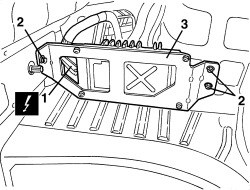
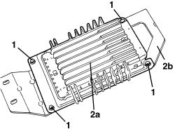

5580T42 BOSE SOUND SYSTEM AMPLIFIER - R.R.
- Path
- Procedures > 55 ELECTRICAL EQUIPMENT > 5580 SPECIAL ACCESSORIES > 5580T BOSE SOUND SYSTEM > 5580T42 BOSE SOUND SYSTEM AMPLIFIER - R.R.
- Kind
- repair procedure (removal / refitting; the operation number is the code)
- Applies to
- all engines; all production periods
- Interactive page
- https://sloeber94.github.io/elrnDB-aBrrSpdr/en/#/946004553
Applies to: all engines; all production periods
 Removing
Removing
 Refitting
Refitting- Work on the left side of the luggage compartment.
Op. 7040B22 LUGGAGE COMPARTMENT/LOAD PLATFORM MOULDING - R+R
Op. 7040G30 BOOT LIGHT BULB HOLDER - R.R.
Op. 7040B18 LOAD COMPARTMENT LOAD PLATFORM SIDE TRIM ONE LH OR RH - R.R
Op. 5580T40 BOSE SOUND SYSTEM SUBWOOFER - R.R.
1. Working in the luggage compartment, disconnect the electrical connection.
Description | Connector | |
|---|---|---|
1 | RADIO HIFI AMPLIFIER |
2. Undo the bolts.
3. Recover the amplifier complete with bracket.

Applies to: all engines; all production periods
1. If necessary, undo the screws.
2. Separate amplifier (2a) from bracket (2b).

Applies to: all engines; all production periods
Refitting
Removing- Check that the amplifier is not damaged.
- Secure the amplifier to the bracket with the screws.
- Position the amplifier complete with bracket.
- Screw in the bolts.
- Attach the electrical connection.
Op. 5580T40 BOSE SOUND SYSTEM SUBWOOFER - R.R.
Op. 7040B18 LOAD COMPARTMENT LOAD PLATFORM SIDE TRIM ONE LH OR RH - R.R
Op. 7040G30 BOOT LIGHT BULB HOLDER - R.R.
Op. 7040B22 LUGGAGE COMPARTMENT/LOAD PLATFORM MOULDING - R+R
- Check the audio system is working.
Applies to: engines: 2.2 JTS, 3.2 JTS; all production periods; only with equipment: Spider
Removing
Refitting- Work on the left side of the luggage compartment.
Op. 7040B20 BACK TRIM FOR LUGGAGE COMPARTMENT/LOAD PLATFORM - ARRANGE
Op. 7040B10 LOAD PLATFORM (LUGGAGE PLATFORM) TRIM - R+R
Op. 7040B22 LUGGAGE COMPARTMENT/LOAD PLATFORM MOULDING - R+R
Op. 7040G30 BOOT LIGHT BULB HOLDER - R.R.
Op. 7040B18 LOAD COMPARTMENT LOAD PLATFORM SIDE TRIM ONE LH OR RH - R.R
1. Working in the luggage compartment, disconnect the electrical connection.
Description | Connector | |
|---|---|---|
1 | RADIO HIFI AMPLIFIER |
2. Undo the bolts.
3. Recover the amplifier complete with bracket.

Applies to: engines: 2.2 JTS, 3.2 JTS; all production periods; only with equipment: Spider
1. If necessary, undo the screws.
2. Separate amplifier (2a) from bracket (2b).

Applies to: engines: 2.2 JTS, 3.2 JTS; all production periods; only with equipment: Spider
Refitting
Removing- Check that the amplifier is not damaged.
- Secure the amplifier to the bracket with the screws.
- Position the amplifier complete with bracket.
- Screw in the bolts.
- Attach the electrical connection.
Op. 7040B18 LOAD COMPARTMENT LOAD PLATFORM SIDE TRIM ONE LH OR RH - R.R
Op. 7040G30 BOOT LIGHT BULB HOLDER - R.R.
Op. 7040B22 LUGGAGE COMPARTMENT/LOAD PLATFORM MOULDING - R+R
Op. 7040B10 LOAD PLATFORM (LUGGAGE PLATFORM) TRIM - R+R
Op. 7040B20 BACK TRIM FOR LUGGAGE COMPARTMENT/LOAD PLATFORM - ARRANGE
Topics linked from this page (7)
- 5580T40 BOSE SOUND SYSTEM SUBWOOFER - R.R.
- 7040B10 LOAD PLATFORM (LUGGAGE PLATFORM) TRIM - R+R
- 7040B18 LOAD COMPARTMENT LOAD PLATFORM SIDE TRIM ONE LH OR RH - R.R
- 7040B20 BACK TRIM FOR LUGGAGE COMPARTMENT/LOAD PLATFORM - ARRANGE
- 7040B22 LUGGAGE COMPARTMENT/LOAD PLATFORM MOULDING - R+R
- 7040G30 BOOT LIGHT BULB HOLDER - R.R.
- P070 RADIO HI-FI AMPLIFIER